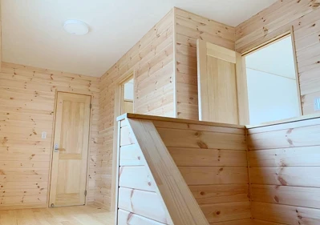

使いやすい収納の作り方②
こんにちは。富山で自然素材にこだわるホンモノの家、フジ創アイノスです。 前回に続いて、片付けやすい収納にするためにはどのようにすればいいか、考えていきます。 ▼管理しやすい収納とは？ 人の脳は、物事が複雑になればなるほど
続きを読む →FUJISOU AINOS JOURNAL
家づくりのこと、暮らしのこと。
日々の想いを、お伝えします。
家づくりについて 555件 ／ 新しい記事から 10・24ページ
こんにちは。富山で自然素材にこだわるホンモノの家、フジ創アイノスです。 前回に続いて、片付けやすい収納にするためにはどのようにすればいいか、考えていきます。 ▼管理しやすい収納とは？ 人の脳は、物事が複雑になればなるほど
続きを読む →こんにちは。富山で自然素材にこだわるホンモノの家、フジ創アイノスです。 核家族や共働きの家庭が多く、忙しい現代人。 掃除の手間はできるだけカットしたいですよね。 そのために、出来るだけ片付けがしやすい家づくりについて考え
続きを読む →
こんにちは。富山で自然素材にこだわるホンモノの家、フジ創アイノスです。 梅雨まっただ中、体調管理に注意してくださいね。 湿度が高いと、気温が低くても蒸し暑く感じます。 人が暑い、寒いと感じる体感温度は、湿度と大きな関係が
続きを読む →こんにちは。富山で自然素材にこだわるホンモノの家、フジ創アイノスです。 前回は、家づくりの予算設定には細心の注意を払う必要があり、最も注意を払うべきは「土地にかける予算」という話でした。 ▼土地選びで使っておくべき二つの
続きを読む →こんにちは。富山で自然素材にこだわるホンモノの家、フジ創アイノスです。 収入が年金だけになる老後の生活。みなさんはどうお考えですか？ 年金生活になった後も賃貸物件を借り、家賃を払いながらの生活を想像すると「現実的には厳し
続きを読む →こんにちは。富山で自然素材にこだわるホンモノの家、フジ創アイノスです。 じめじめした日が続いていますね。 今日も高岡は湿度９０％です。 梅雨の高い湿度は健康を害することがありますので、注意が必要です。 湿度が高すぎると、
続きを読む →こんにちは。富山で自然素材にこだわるホンモノの家、フジ創アイノスです。 敷地に無駄な余白をつくらないためには、 無駄に広い土地を買わないこと も非常に大切なことです。 土地が広くなれば、必然的に境界の距離も長くなってしま
続きを読む →
こんにちは。富山で自然素材にこだわるホンモノの家、フジ創アイノスです。 家づくりの資金計画を最も狂わせやすいのは、外構工事（庭づくり）と言っても過言ではありません。 最初の資金計画の段階では、家の予算を圧迫しないようにす
続きを読む →
こんにちは。富山で自然素材にこだわるホンモノの家、フジ創アイノスです。 ▼敷地を有効活用した家づくりのメリット 前回お伝えしたように、知らない間に受け入れてしまっている常識にとらわれず間取りを設計し、日かげさえも有効活用
続きを読む →こんにちは。富山で自然素材にこだわるホンモノの家、フジ創アイノスです。 日当たりに難がありそうな土地に家を建てる場合、南に建つ家の日かげになる場所を避けて家を建てるのが一般的な考え方です。 しかし、そうすることによって、
続きを読む →
こんにちは。富山で自然素材にこだわるホンモノの家、フジ創アイノスです。 今日の高岡市の湿度は90％でした。 梅雨の高い湿度は健康を害することがありますので、注意が必要です。 高湿度の環境はカビが発生しやすくなり、アレルギ
続きを読む →
こんにちは。富山で自然素材にこだわるホンモノの家、フジ創アイノスです。 まず平屋は高いという認識ですが、これに対する解決策は、自分にとって不要だと思うところや無駄だと思うところを削ることによって余分なコストをカットするこ
続きを読む →こんにちは。富山で自然素材にこだわるホンモノの家、フジ創アイノスです。 『平屋』がその敷地におさまり、かつ暮らしの快適性に支障をきたさないのであれば、平屋を基本に家づくりを考えるのが良いでしょう。 今回は平屋について、良
続きを読む →
こんにちは。富山で自然素材にこだわるホンモノの家、フジ創アイノスです。 ✔︎間取りを自分だけで決めない 家の外観を美しくするために一番大切なことは、間取りを自分で勝手に決めないことです。 例えば、家を建てる土地が北向きの
続きを読む →こんにちは。富山で自然素材にこだわるホンモノの家、フジ創アイノスです。 白い家の外観は美しく、憧れを抱く方も多いと思いますが、それと同時に汚れやすく、かつ汚れも目立ちやすいというネガティブな要素も、頭に浮かんでしまうので
続きを読む →こんにちは。富山で自然素材にこだわるホンモノの家、フジ創アイノスです。 ✔︎光を拡散するための工夫 窓づくりを工夫した次には、入ってきた光を家全体に拡散させていくことが必要です。 そのために欠かせない1つ目の要素が、 『
続きを読む →こんにちは。富山で自然素材にこだわるホンモノの家、フジ創アイノスです。 室内を光に満ちた明るい空間にするためには、窓から光を安定的に採り込むことと、その光を家全体にまんべんなく届けるための工夫が必要です。 そのためには、
続きを読む →
こんにちは。富山で自然素材にこだわるホンモノの家、フジ創アイノスです。 ✔︎片付きやすいかどうかも間取り次第 掃除や片付けなどの負担を減らすことも、快適な住まいにするためには大切な要素ですが、これを考えるにあたって最もや
続きを読む →こんにちは。富山で自然素材にこだわるホンモノの家、フジ創アイノスです。 自宅でストレスなく快適に過ごしていただくためには、家事にかかる負担が少ないことも、大切な条件の1つではないでしょうか。 というのも、共働きが当たり前
続きを読む →
こんにちは。富山で自然素材にこだわるホンモノの家、フジ創アイノスです。 ✔︎難しい、明るさとプライバシーの共存 南向きの土地は、一見光に満ちた明るくて開放的な家が出来上がると思ってしまいますが、現実は、案外そうでもありま
続きを読む →こんにちは。富山で自然素材にこだわるホンモノの家、フジ創アイノスです。 "快適な家にしたい"という願いは、家づくりをする全ての方がお持ちだと思います。 その"快適なお家"とは具体的には、 "光と開放感が感じられること"
続きを読む →
こんにちは。富山で自然素材にこだわるホンモノの家、フジ創アイノスです。 今日は世界禁煙デー。WHOが世界人類の健康のために制定しました。 みなさん健康に気を付けましょう！ 人が一日で最も多く体に取り込むものは、空気です。
続きを読む →こんにちは。富山で自然素材にこだわるホンモノの家、フジ創アイノスです。 窓が少なくなると、室内側にも大きなメリットが生まれます。 というのも、窓が少なくなれば、必然的に壁の面積が増え、壁の面積が増えれば、収納の棚をよりた
続きを読む →こんにちは。富山で自然素材にこだわるホンモノの家、フジ創アイノスです。 家を建てる誰もが、明るくて開放的なお家にしたいと思い、そうなるように充分な窓を設置します。 しかし、明るさや開放感は、必ずしも窓の大きさや数には比例
続きを読む →